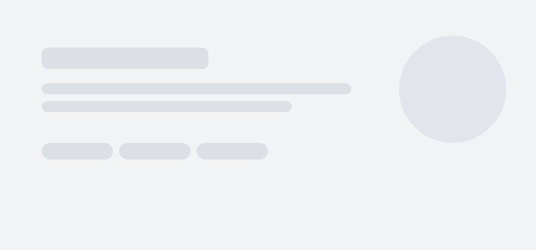

About
I build clean, reliable systems and modern web experiences. I like shipping, measuring results, and iterating fast. Currently interested in cloud engineering, networking, and security-minded architecture.
Focus
Cloud • Networking • Security
Stack
AWS • Linux • Node • React • SQL
Location
Orlando, FL (open to remote)
Experience
-
December 2025 — Present
Elite / Premium Support Engineer — Kaseya
- Troubleshot backup/restore workflows across Windows and Linux endpoints; diagnosed SMB/iSCSI and connectivity issues.
- Used ping, traceroute, and packet-level thinking to isolate routing/DNS/firewall causes across segmented networks.
- Improved support playbooks with scripts and checklists; reduced time-to-resolution for repeat incidents.
Linux Bash SMB iSCSI -
June 2025 — December 2025
Support Engineer — Kaseya
- Troubleshot backup/restore workflows across Windows and Linux endpoints; diagnosed SMB/iSCSI and connectivity issues.
- Used ping, traceroute, and packet-level thinking to isolate routing/DNS/firewall causes across segmented networks.
- Improved support playbooks with scripts and checklists; reduced time-to-resolution for repeat incidents.
Linux Bash SMB iSCSI -
January 2023 — Present
Bachelors of Science in Computer Science @ UCF
- Troubleshot backup/restore workflows across Windows and Linux endpoints; diagnosed SMB/iSCSI and connectivity issues.
- Used ping, traceroute, and packet-level thinking to isolate routing/DNS/firewall causes across segmented networks.
- Improved support playbooks with scripts and checklists; reduced time-to-resolution for repeat incidents.
Linux Bash SMB iSCSI